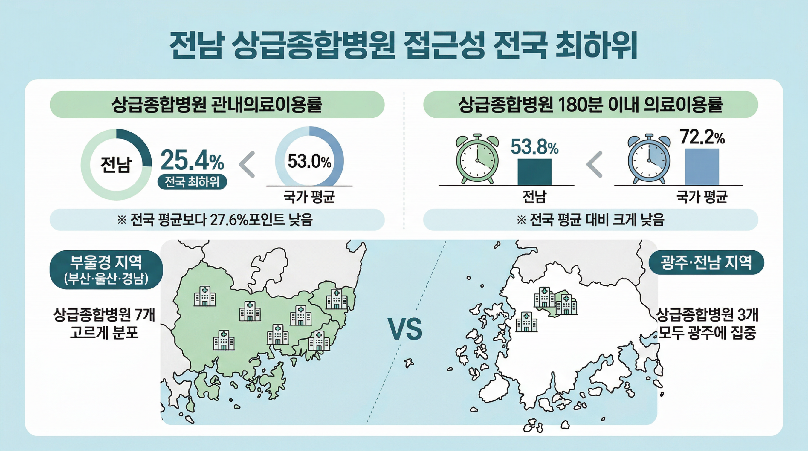
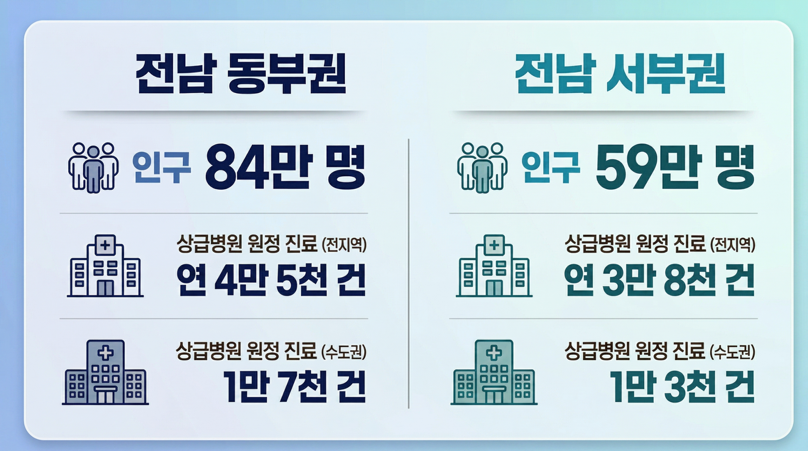

전남에 의과대학이 세워집니다.
동부 순천, 그리고 서부 목포.
"이 숫자들이 바뀔 때가 왔습니다."

매년 전남 도민이 상급병원을 찾아
고향을 떠나는 횟수입니다.

캠퍼스를 나누는 건 새로운 일이 아닙니다.
5~6학년 임상실습
교육병원: 전남대병원
이미 이런 캠퍼스가 운영되고 있습니다.
전남 국립의대도 같은 방식으로 가능합니다.
지역에 뿌리내린 의료 인재, 쌓이면 도시가 달라집니다.
연구소, 기업, 일자리가 따라옵니다. 전남이 대한민국 의료산업의 새 거점이 됩니다.
의료와 교육과 산업이 하나로, 전남이 살아납니다.
광주전남 통합시장을 꿈꾸는 두 후보가 같은 약속을 했습니다.
순천과 목포, 양쪽에 의대와 병원을.
제때 치료받으면 살 수 있는 생명입니다.
40년을 기다렸습니다.
「전남 국립의과대학 설립 특별법」 발의 및 입법 추진
전남 동·서부 양쪽 의대 캠퍼스와 병원 동시 설립
전남이 대한민국 의료산업의 새 거점이 되도록